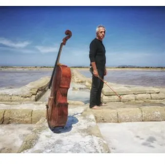

mer 18 nov · dalle 20:30
Sollima & FVG Orchestra
18 novembre 2026 ore 20.30 Teatro Maurensigh Un programma che attraversa epoche, poetiche e linguaggi differenti, affidato alla personalità inconfondibile di Giovanni Sollima e alla FVG Orchestra. Violoncellista e compositore tra i più originali della scena internazionale…
 Indicazioni
Indicazioni
- Costi e prenotazioni
- Costo non indicato · Prenotazione non indicata
- Programma
- Programma da verificare. Apri la fonte ufficiale per orari e possibili aggiornamenti.
- In caso di maltempo
- Nessuna indicazione specifica pubblicata.
- Note
- Acquisito automaticamente dalla fonte.
L’EVENTO
Descrizione completa
Un programma che attraversa epoche, poetiche e linguaggi differenti, affidato alla personalità inconfondibile di Giovanni Sollima e alla FVG Orchestra. Violoncellista e compositore tra i più originali della scena internazionale, Sollima ha fatto del proprio strumento un autentico laboratorio espressivo, capace di congiungere memoria e sperimentazione, rigore e libertà, gesto teatrale e ricerca sonora. Nella sua visione, la tradizione non è mai materia immobile, ma un territorio vivo da interrogare e reinventare.
La serata si apre con la Nenia e recitativo di Eliodoro Sollima nella quale il violoncello assume quasi il carattere di una voce umana, sospesa tra canto, evocazione e memoria.
Segue il Concerto in la minore op. 129 di Schumann, uno dei vertici del repertorio romantico per violoncello: un’opera di straordinaria unità poetica, nella quale virtuosismo e introspezione si fondono in un discorso continuo, lontano da ogni esibizione spettacolare.
Con Terra con variazioni, Giovanni Sollima conduce invece il pubblico nel cuore del proprio universo creativo: il violoncello si fa voce arcaica e contemporanea, ritmo, canto e materia sonora in perenne trasformazione.
A chiudere il concerto, la Sinfonia classica op. 25 di Prokofiev, raffinato e ironico omaggio al Settecento: Haydn rivisitato attraverso lo sguardo del Novecento, tra eleganza formale, invenzione ritmica, humour e modernissima leggerezza.
Giovanni Sollima violoncello e direzione
FVG Orchestra
Eliodoro Sollima
Nenia e recitativo per violoncello e archi
Robert Schumann
Concerto in la min. per violoncello e orchestra, op. 129
Giovanni Sollima
Terra con variazioni per violoncello e orchestra
Sergej Prokofifiev
Sinfonia n. 1 in re maggiore, op. 25 “Sinfonia classica”
Intero 20€
Ridotto/Residenti 15€
Under30 10€
Under18 5€ I biglietti singoli saranno acquistabili dal 2 novembre
Biglietti disponibili su Vivaticket o in biglitteria
Per info: 0432 543049 / biglietteria@fondazionebon.com
IL PROGRAMMA
Programma e orari
Appuntamenti raccolti dalle fonti elencate. Dove manca un orario, non è ancora disponibile in questa scheda.
Programma pubblicato
- Dal 2026-11-18 al 2026-11-18
INFORMAZIONI UTILI
Prima di partire
- Controllare la fonte prima di partire.
ORGANIZZAZIONE